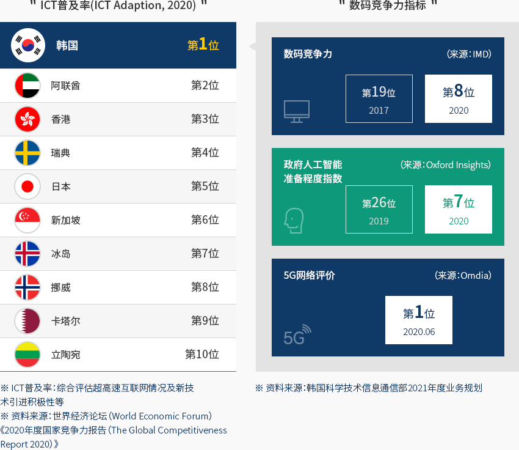
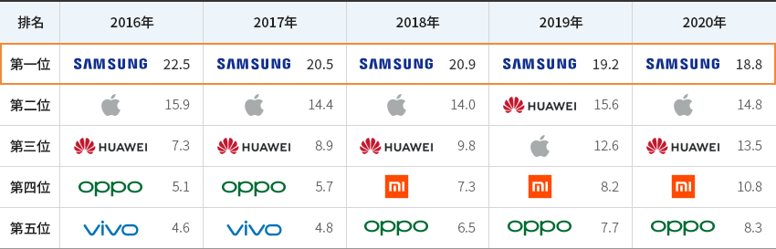
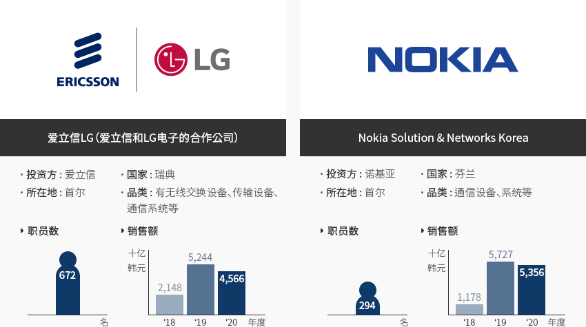
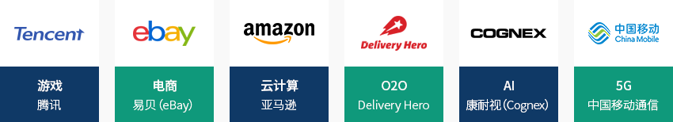
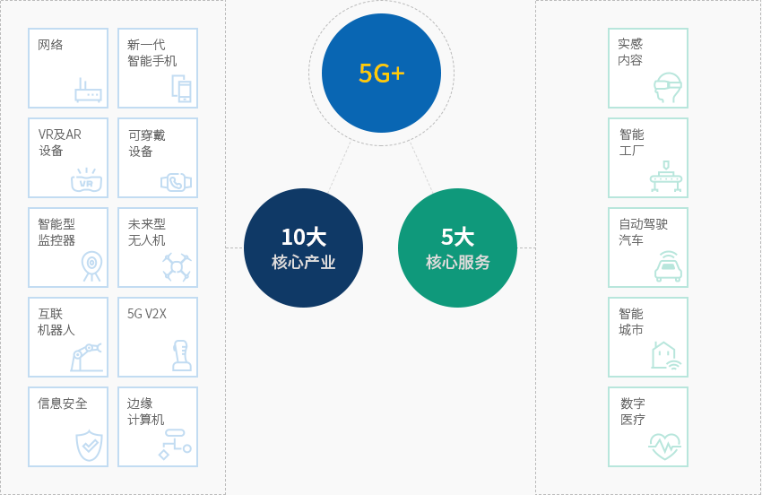
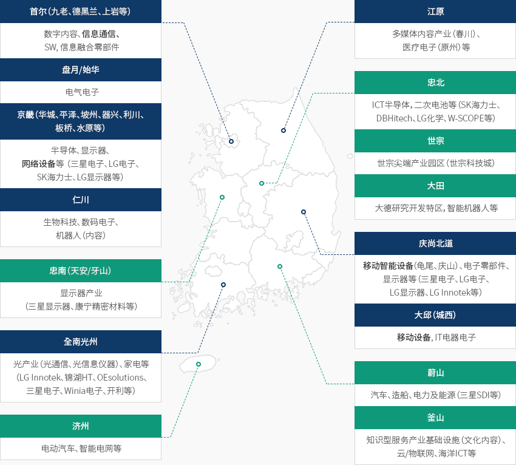

信息通信(ICT)
- Home
- Why KOREA
- 产业
- 信息通信(ICT)
-
全球最初且 世界第一的信息通信强国 关闭内容全球最初且 世界第一的信息通信强国韩国是ICT产业的全球领袖。
韩国在全球率先实现CDMA（1996年）、LTE-A（2013年）、5G（2019年）商用，
ICT技术水平和普及率均位于世界前列，被评为ICT领域的全球领袖。ICT普及率（ICT Adeption, 2019）
- 第1位:韩国
- 第2位:阿联酋
- 第3位:香港
- 第4位:瑞典
- 第5位:日本
- 第6位:新加坡
- 第7位:冰岛
- 第8位:挪威
- 第9位:卡塔尔
- 第10位:立陶宛
※ ICT普及率：综合评估超高速互联网情况及新技术引进积极性等
※ 资料来源：世界经济论坛（World Economic Forum）《2020年度国家竞争力报告（The Global Competitiveness Report 2020）》数码竞争力指标
- 数码竞争力（来源：IMD） 2017 - 第19位 2020 -第8位
- 政府人工智能准备程度指数（来源：Oxford Insights） 2017 - 第26位 2020 - 第7位
- 5G网络评价（来源：Omdia） 2020.06 - 第1位
※ 资料来源：韩国科学技术信息通信部2021年度业务规划 特别是智能手机和网络设备制造商，正在全球市场上崭露头角，而韩国的移动通信服务也引领全球创新。
特别是智能手机和网络设备制造商，正在全球市场上崭露头角，而韩国的移动通信服务也引领全球创新。
韩国本土智能手机制造商致力于普及5G和折叠屏，增强高端领导能力，同时强化中低端智能手机阵容，
自2011年以来一直蝉联全球智能手机销量冠军。※ 三星电子折叠屏智能手机市占率（Counterpoint，%（万部）) : (2020)73(204) → (2021e)88(792) → (2023e)75(2,100)"全球五大智能手机厂商的市占率趋势"(单位 : %)全球五大智能手机厂商的市占率趋势 排名, 2015年, 2016年, 2017年, 2018年, 2019年 排名 2016 2017 2018 2019 2020 第一位 SAMSUNG 22.5% SAMSUNG 20.5% SAMSUNG 20.9% SAMSUNG 19.2% SAMSUNG 18.8% 第二位 APPLE 15.9% APPLE 14.4% APPLE 14.0% HUAWEI 15.6% APPLE 14.8% 第三位 HUAWEI 7.3% HUAWEI 8.9% HUAWEI 9.8% APPLE 12.6% HUAWEI 13.5% 第四位 OPPO 5.1% OPPO 5.7% XIAOMI 7.3% XIAOMI 8.2% XIAOMI 10.8% 第五位 vivo 4.6% vivo 4.8% OPPO 6.5% OPPO 7.7% OPPO 8.3%  ※ 资料来源：加特纳（Gartner）（以销量为准）
※ 资料来源：加特纳（Gartner）（以销量为准） -
带动国家经济的 支柱产业 打开内容带动国家经济的 支柱产业2020年，ICT产业在韩国GDP中占比为11.4%（1775亿美元），引领着韩国经济增长。
尤其，手机作为韩国十五大出口品类之一，占2020年韩国出口总额的2.2%左右，
而得益于5G商用，通信服务产业的销售额也在持续提升。※ 手机出口业绩（亿美元）:（2017年）190→（2018年）146→（2019年）120→（2020年）112
※ 通信服务销售业绩（万亿韩元）:（2017年）38.0→（2018年）37.3→（2019年）36.5→（2020年）37.1(单位 : 十亿韩元)ICT产业产值（销售额） 排名, 年度 排名 2016年 2017年 2018年 2019年 2020年 整体ICT 4,310,446 4,716,630 5,017,265 4,628,612 4,793,643 设备 3,090,158 3,427,552 3,679,382 3,227,288 3,320,840 服务 726,886 748,828 766,745 781,574 808,327 软件（SW） 493,402 540,251 571,139 619,750 664,477 ※ 资料来源：科学技术信息通信部《ICT主要品类动向调查》
※ 国家统计门户网站（KOSIS） [立即前往] -
进军韩国的跨国企业 加大力度发展5G业务 打开内容进军韩国的跨国企业 加大力度发展5G业务最近，进军韩国的全球ICT企业正在加大力度发展5G相关业务。瑞典企业爱立信从2G时代开始就投资韩国，主导通信市场发展。最近爱立信携手韩国移动通信公司共同针对
5G提高研发投资力度。芬兰企业诺基亚以在韩国的丰富经验为基础，在世界各地支持网络品质及性能改善，
还提供5G等新一代网络基础设施的虚拟化服务及解决方案。(截至2020年12月)爱立信LG（爱立信和LG电子的合作公司）- 投资方 : 爱立信
- 国家 : 瑞典
- 所在地 : 首尔
- 品类 : 有无线交换设备、传输设备、通信系统等
- 职员数 : 668名 (截至2019年12月)
- 销售额
- ’17年 : 2.4억 달러
- ’18年 : 2.0억 달러
- ‘19年 : 4.5억 달러
Nokia Solution & Networks Korea- 投资方 : 诺基亚
- 国家 : 芬兰
- 所在地 : 首尔
- 品类 : 通信设备、系统等
- 职员数 : 274名(截至2019年12月)
- 销售额
- ’17年 : 1.7억 달러
- ’18年 : 1.1억 달러
- ’19年 : 4.9억 달러
 另外，诸多跨国企业不断投资韩国的5G、人工智能（AI）、云技术（Cloud）、电商（e-Commers）、O2O、游戏、视频等领域，
另外，诸多跨国企业不断投资韩国的5G、人工智能（AI）、云技术（Cloud）、电商（e-Commers）、O2O、游戏、视频等领域，
预计今后随着数字大转型时代来临，对电商和在线平台的投资将持续增加。※ 数码新政领域外商直接投资（产业部招商引资科，亿美元）:（2020年上半年）14.5→（2021年上半年）33.3（+129.3%）。
※ 信息通信领域外商直接投资（产业部招商引资科，亿美元）:（2020年上半年）10.2→（2021年上半年）31.7（+210.8%）。
-
5G+战略和 数码新政 打开内容5G+战略和 数码新政2019年4月，韩国政府公布加快5G商用步伐及发展5G相关新产业的《5G+》战略。
具体战略内容包括，通过重点投资以5G技术为基础的10大核心产业和5大核心服务，
发展以5G+技术为基础的新产业，争取到2026年实现世界市占率15%，
并由政府及公共领域率先引进5G，构建民官合作体系。"《5G+》战略的10大核心产业及5大核心服务"5G- 10大 核心产业
- 网络
- 新一代智能手机
- VR·AR 设备
- 可穿戴设备
- 智能型监控器
- 未来型无人机
- 互联机器人
- 5G V2X
- 信息安全
- 边缘计算机（Edge computer）
- 5大 核心服务
- 实感内容
- 智能工厂
- 自动驾驶汽车
- 智能城市
- 数字医疗
※ 资料来源：科学技术情报通信部《旨在实现创新发展的5G+战略》2020年7月，韩国政府公布《韩国版新政》，计划集中投资建设D.N.A（数据Data、网络Network、人工智能AI）生态系统。
新政的目标是建设5G全国网络和推动AI融合项目等，加快数据、5G、人工智能技术在全产业链的整合及利用。
一年来，非接触式交易和教育增多等促使数码转型迅速，为克服新冠肺炎危机做出贡献，带来坚挺的复苏势头。2021年7月韩国进一步发展完善已有的新政战略，制定《新政2.0战略》，以适应急剧变化的环境。
计划将数码融复合与新政1.0成果推广到整个经济社会，发展元宇宙、云计算、区块链等超链接新产业。※ 2022年数码新政财政投资：（新政1.0）8.6万亿韩元→（新政2.0）8.7万亿韩元以上
※ 2025年数码新政累计财政投资:（新政1.0） 44.8万亿韩元→（新政2.0） 49万亿韩元左右"数码新政1.0与新政2.0"数码新政1.0与新政2.0 新政1.0(当前)“推动经济基础数码转型”, “推广数码融复合＂ 数码新政 新政1.0(当前)“推动经济基础数码转型” 增强D.N.A生态系统 - 促进数据、5G、AI的融合及应用·推动产业数码化
教育基础设施数码转型 - 智慧校园、线上线下融合学习等
发展非接触式产业 - 支持医疗照护基础设施数码非接触化、工商业者线上业务等
SOC数码化 - 交通和灾难管理等数码化、建设智慧产业园和城市物流体系
新政2.0(变更)“推广数码融复合＂ 增强D.N.A生态系统 - 推广个人数据产业（修订个人信息法），支持利用化名信息
- 制定三部数码经济转型法律
- 构建6G国际联合研发合作体系
升级非接触式基础设施（整合） - 提前建设小初高高性能WiFi
- 运用Dr. Answer Clinic，普及智能型急救医疗服务
- 利用智能技术（物联网和人工智能等）提升智能商店质量
发展元宇宙等超链接新产业 - 建设开放型元宇宙平台，支持制作多种元宇宙内容
- 在5G和人工智能的基础上进行机器人及服务融合实证，解决社会问题
- 跨部门推动大型区块链技术融合对接项目
- 发掘智能型物联网服务并推广应用
SOC数码化 - 扩建智慧城市数据中心
※ 资料来源：韩版数字新政2.0 - 10大 核心产业
-
首都地区、大邱及庆北地区的 通信设备制造业发达 打开内容首都地区、大邱及庆北地区的 通信设备制造业发达ICT产业相关集群遍布韩国，按领域来看，智能手机集群主要形成于首都地区和大邱庆北地区，
网络设备集群则集中于首都地区。按照当前建设计划，5G网络基础设施正从首都地区辐射到全国。韩国ICT集群现状- 首尔（九老、德黑兰、上岩等）: 数字内容、信息通信、SW：信息融合零部件
- 盘月/始华: 电气电子
- 京畿（华城、平泽、坡州、器兴、利川、板桥、水原等）: 半导体、显示器、网络设备等（三星电子、LG电子、SK海力士、LG显示器等）
- 仁川: 生物科技、数码电子、机器人（内容）
- 忠南（天安/牙山）: 显示器产业（三星显示器、康宁精密材料等）
- 全南光州: 光产业（光通信、光信息仪器）、家电等（LG Innotek、锦湖HT、OEsolutions、三星电子、Winia电子、开利等）
- 济州: 电动汽车、智能电网等
- 江原:多媒体内容产业（春川）、医疗电子（原州）等
- 忠北: ICT半导体，二次电池等（SK海力士、DBHitech、LG化学、W-SCOPE等）
- 世宗: 世宗尖端产业园区（世宗科技城）
- 大田: 大德研究开发特区，智能机器人等
- 庆尚北道: 移动智能设备（龟尾、庆山）、电子零部件、显示器等（三星电子、LG电子、LG显示器、LG Innotek等）
- 大邱（城西）: 移动设备、IT电器电子
- 蔚山: 汽车、造船、电力及能源（三星SDI等）
- 釜山: 知识型服务产业基础设施（文化内容）、云/物联网、海洋ICT等
※ 资料协助：韩国电子信息通信产业振兴会


Invest KOREA
ICT PM
姜炯坤, 朴姜利
新产业引进组
T.+82-2-3460-7865, 7861
有关地点的建议
Industrial complex information
[Gyeonggi-do Anyang City] Anyang Pyeongchon Smart Square Urban High-tech
Industrial Complex
Click [Go to Detailed Information] to go to the relevant information screen of
Smart K-Factory service of Industrial Complex Corporation.
-
Complex nameAnyang Pyeongchon Smart Square Urban High-tech Industrial Complex
-
Initial designation date2012.04.03
-
Designated area(m2)255,065
-
ManagementGyeonggi-do Anyang City
-
Nearby RailwayGwangmyeong Station
-
Distance from station(km)9
-
Nearby AirportGimpo International Airport
-
Distance from airport(km)27
-
Industrial water Supply capacity(ton/day)1251(㎥/day)
-
Affiliation local governmentGyeonggi-do Anyang City
-
Population554,857
Industrial complex information
[Busan Metropolitan City Haeundae-gu] Hoe-dong and Seokdae Urban High-tech
Industrial Park
Click [Go to Detailed Information] to go to the relevant information screen of
Smart K-Factory service of Industrial Complex Corporation.
-
Complex nameHoe-dong and Seokdae Urban High-tech Industrial Park
-
Initial designation date2008.08.27
-
Designated area(m2)228,604
-
ManagementBusan Metropolitan City Haeundae-gu
-
Nearby RailwayBujeon Station
-
Distance from station(km)12
-
Nearby AirportGimhae International Airport
-
Distance from airport(km)33
-
Industrial water Supply capacity(ton/day)2939(㎥/day)
-
Affiliation local governmentBusan Metropolitan City Haeundae-gu
-
Population403,118
Industrial complex information
[Daejeon Metropolitan City Useong-gu] Daedeok R&D (2nd District) [formerly:
Daedeok Techno Valley]
Click [Go to Detailed Information] to go to the relevant information screen of
Smart K-Factory service of Industrial Complex Corporation.
-
Complex nameDaedeok R&D (2nd District) [formerly: Daedeok Techno Valley]
-
Initial designation date1991.12.05
-
Designated area(m2)4,270,056
-
ManagementInnopolis Foundation
-
Nearby RailwayDaejeon Station
-
Distance from station(km)13
-
Nearby AirportCheongju International Airport
-
Distance from airport(km)44
-
Industrial water Supply capacity(ton/day)130000(㎥/day)
-
Affiliation local governmentDaejeon Metropolitan City Useong-gu
-
Population1,469,431
Industrial complex information
[Jeollabuk-do Jeongeup City] Jeongeup High-tech Science (RFT) General
Industrial Complex
Click [Go to Detailed Information] to go to the relevant information screen of
Smart K-Factory service of Industrial Complex Corporation.
-
Complex nameJeongeup High-tech Science (RFT) General Industrial Complex
-
Initial designation date2007.06.29
-
Designated area(m2)896,321
-
ManagementInnopolis Foundation
-
Nearby RailwayCheonwon Station
-
Distance from station(km)6
-
Nearby AirportGwangju Airport
-
Distance from airport(km)51
-
Industrial water Supply capacity(ton/day)4,720(㎥/day)
-
Affiliation local governmentJeollabuk-do Jeongeup City
-
Population109,167
Industrial complex information
[Daegu Metropolitan City Dalseong County] Daegu Technopolis General
Industrial Complex(Daegu Gyeongbuk Free Economic Zone)
Click [Go to Detailed Information] to go to the relevant information screen of
Smart K-Factory service of Industrial Complex Corporation.
-
Complex nameDaegu Technopolis General Industrial Complex(Daegu Gyeongbuk Free Economic Zone)
-
Initial designation date2006.12.29
-
Designated area(m2)7,259,403
-
ManagementInnopolis Foundation
-
Nearby RailwayDongdaegu Station
-
Distance from station(km)4
-
Nearby AirportDaegu International Airport
-
Distance from airport(km)5
-
Industrial water Supply capacity(ton/day)8508(㎥/day)
-
Affiliation local governmentDaegu Metropolitan City Dalseong County
-
Population258,234
Industrial complex information
[Jeju Special Self-Governing Province Jeju-si] Jeju Advanced Science and
Technology Complex
Click [Go to Detailed Information] to go to the relevant information screen of
Smart K-Factory service of Industrial Complex Corporation.
-
Complex nameJeju Advanced Science and Technology Complex
-
Initial designation date2004.10.23
-
Designated area(m2)1,098,878
-
ManagementJeju International Free City Development Center
-
Nearby Railway-
-
Distance from station(km)-
-
Nearby AirportJeju Airport
-
Distance from airport(km)14
-
Industrial water Supply capacity(ton/day)1025(㎥/day)
-
Affiliation local governmentJeju Special Self-Governing Province Jeju-si
-
Population672,524